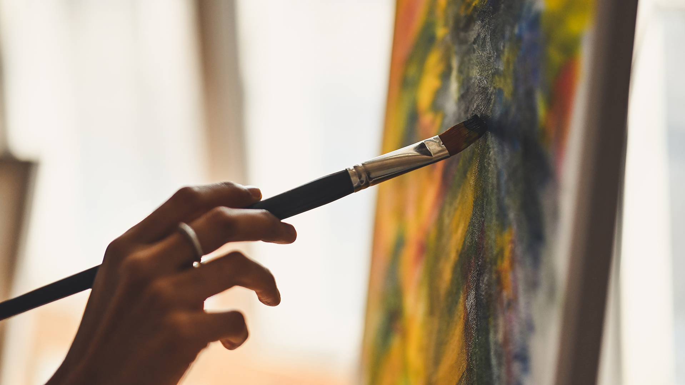

Moje osiągnięcia

Największe osiągnięcia jakie posiadam, są w dziedzinie sztuki, którą jest plastyka.
Odkąd byłam małym dzieckiem lubiłam rysować, malować i wykonywać różne inne prace manualne.
Od wielu lat regularnie uczęszczam na zajęcja plastyczne, które dają mi możliwość kształcenia się
w tej dziedzinie oraz brania udziału w rozmaitych konkursach plastycznych.
Jak byłam młodsza to bardzo często brałam
udział w tych konkursach, nie raz wygrywając je lub zajmując, któreś z niższych miejsc na podium.